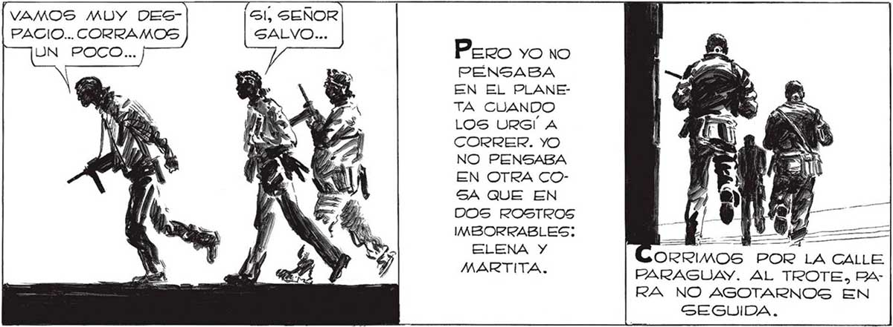

"POR UN LADO, MEJOR QUE NO ES- APUREMOS, FAVA. TENEMOS QUE TALLEN.. SEGURO QUE TRAEN CA AVERIGUAR DE UNA VEZ PORRAZON. JUAN. BEZAS ATOMICAS...NO CONTARÍA- QUÉ FALLAN...Y LUEGO IRNOS. CUANTO ANTES, PARA QUE NUES TRA INFORMACIÓN MOS EL CUENTO... IN | ch Ñ el MI INN Wenían DEL NORTE. Y SUS ESTELAS S APAGABAN DE PRONTO, COMO Sl SE LOS ENGULLERA LA NOCHE.O COMO SI DIERAN CONTRA UNA PARED. l m Y 4 NO PODIAMOS DESPERDICIAR LA OCASION DE GABERLO TODO.P NUESTROS DATOS PODIAN DECI"VAMOS MUY DES- Gl, SEÑOR PACIO... CORRAMOS SALVO... UN POCO... ] Sí, AQUELLOS COHETES TELE- Pero YO NO DIRIGIDOS QUE DIR Es SUERTE DEL PLANETA N PENSABA LLEGABAN CON- E. EN EL PLANE: TRA EL INVASOR rn ÁS TA CUANDO Y REVELABAN 107 La, LOS URGÍ A QUE TODAVIA HA- JUN a! CORRER. YO BIA EN LA TIERRA Mis NO PENSABA POTENCIAS EN ES EN OTRA COTADO DE COMBA4- SA QUE EN TIR. LO QUE NO- DOS ROSTROS SOTROS YA SA4- IMBORRABLES: dl NY Wi BIAMOS SOBRE ELENA Y PAPA. EL INVASOR ERA MARTITA. AR PARAGUAY. AL TROTE, PARA NO AGOTARNOS EN GEGUIDA. MUCHO PERO... CADA TANTO, EN EL CIELO, RE- PAREMOS... ESTAMOS LAMPAGUEABAN LAS ESTELAS LLEGANDO A CALLAO... LUMINOGAG DE LOS COHETES. EL MIRREN ... SOLO VERLAS NOS HACIA ACELERAR, ASCARUDOS EN CANTIDAD INCREIBLE, ) ¡CON SUS DUROS CUERPOS DE SUPERIN= ] SECTOS, HACIENDO UN RUIDO SORDO AL AVANZAR ... == li Poraue eran LA SEÑAL DE QUE LA TIERRA RESISTIA, DE QUE EN ALGU/ € Deso= Poco MAS DE UNA CUADRA NOS y INS NA PARTE SE DIMOS CUENU HABIA ORGA- TA DE LO dy : NIZADO LA QUE PASABA SY RESISTENCIA POR LA ES CONTRA EL AVENIDA ... po INVASOR. Na Y pz Y 261
